The site has no analytics of any kind — no Google Analytics, no Tag Manager, no pixel, no server-side tracking. There is currently no way to measure whether the redesign improves anything. Installing measurement must be the first task of Sprint 1, before any visual work begins, so that a genuine before/after baseline exists.
Atlas South's website is structurally healthier than it first appears. It is not the single-scroll brochure page it resembles: there are 13 live pages, including eight genuine service pages, each with unique copy (measured content overlap between service pages is only 7.2%, which is low and good). Titles and meta descriptions are written on every page, a sitemap and robots.txt exist, HTTPS and HSTS are enabled, forms carry spam protection, and there is a GDPR cookie banner.
The score of 48/100 is driven almost entirely by missing layers rather than broken ones. Specifically, four things are absent site-wide and each is individually cheap to fix:
LocalBusiness,
Service, Review or FAQPage markup, so Google cannot generate
rich results for a business whose entire market is local search.X-Frame-Options,
no X-Content-Type-Options, no Referrer-Policy.Against ABM, the gap is not primarily information architecture — Atlas South already has per-service pages, an industries section, pricing and multiple conversion paths, and in some respects (transparent pricing, self-serve quote forms, instant contact) it is ahead of ABM, which offers none of those. The gap is in credibility signalling: real imagery, case studies, proof of work, machine-readable trust markers, and a visual language that does not rely on emoji.
Atlas South does not need to be rebuilt from zero. It needs (a) a measurement layer, (b) the missing machine-readable layers, (c) a photography and design-system pass, and (d) expansion of the pages that already exist in outline — industries and service areas — into real landing pages. That is a sequence of additive sprints, not a demolition.
| # | Action | Severity | Category | Effort |
|---|---|---|---|---|
| 1 | Install analytics + conversion tracking to establish a baseline | Critical | Measurement | Low |
| 2 | Resolve the phone-number inconsistency across pages | Critical | Local SEO / Trust | Low |
| 3 | Add real photography; remove emoji iconography | Critical | Design / Credibility | High |
| 4 | Add Open Graph + Twitter Card tags to all pages | High | SEO / Social | Low |
| 5 | Add JSON-LD structured data (LocalBusiness, Service, Review, FAQ) | High | SEO | Medium |
| 6 | Fix ~90 dead # links across the site | High | UX / Crawlability | Low |
| 7 | Add security response headers (CSP, XFO, XCTO, Referrer-Policy) | High | Security | Low |
| 8 | Extract shared CSS/JS to cached external files; add Cache-Control | High | Performance | Medium |
| 9 | Label all form inputs; fix contrast and tap-target failures | Medium | Accessibility | Medium |
| 10 | Build industry and service-area landing pages | Medium | SEO / Content | High |
This audit was not produced by SquirrelScan. The squirrel CLI referenced
by the standard audit workflow is not installed on this machine, so no SquirrelScan health score exists
for this site. Every score in this document was produced by a custom measurement pass written for
this audit, against a transparent rubric published in §3. All underlying measurements are listed
in the Appendix so the scores can be independently checked or recalculated.
If you would like the official SquirrelScan 230-rule score alongside this one, install the CLI from squirrelscan.com/download and the audit can be re-run to produce directly comparable numbers.
| Layer | Method | Coverage |
|---|---|---|
| HTML / SEO metadata | Direct HTTP fetch + parse of every page | All 13 live pages |
| Response headers | curl -I and fetch header inspection | All 13 pages + ABM homepage |
| Rendered DOM | Live JavaScript execution in a real browser session | Homepage |
| Colour contrast | WCAG 2.1 relative-luminance computed on rendered elements | Homepage |
| Tap targets | Bounding-box measurement of all interactive elements | Homepage @1280px |
| Screenshots | Headless Chrome via DevTools Protocol, 1440px desktop & 390px mobile | Both sites |
| Duplicate content | 5-gram Jaccard similarity between all service-page pairs | 8 service pages |
| Crawlability | robots.txt, sitemap.xml, 404 status verification | Site-wide |
Grade scale: A 90–100 · B 80–89 · C 70–79 · D 60–69 · E 50–59 · F below 50. Target for the redesign programme: 85+ (Grade B).
| Category | Score | Weight | Contribution | Dominant deductions |
|---|---|---|---|---|
| SEO | 53 | 22% | 11.66 | No schema, no social meta, partial canonicals, NAP conflict |
| Content & UX | 36 | 20% | 7.20 | No photography, no case studies, dead links, no measurement |
| Accessibility | 49 | 14% | 6.86 | Unlabelled inputs, no landmarks, contrast, tap targets |
| Security | 33 | 14% | 4.62 | Five response headers absent |
| Performance | 64 | 14% | 8.96 | No caching headers, ~1s TTFB, duplicated inline assets |
| Mobile | 68 | 8% | 5.44 | 15,168px page height, small tap targets |
| Technical | 42 | 8% | 3.36 | No build system, no shared assets, no tooling |
| Overall | 48 | 100% | 48.10 | Grade F |
Because SEO carries the heaviest weight and is the metric most often asked about, its ten sub-criteria are published in full:
| SEO criterion | Score | Evidence |
|---|---|---|
| Indexability | 9 / 10 | robots.txt allows all; correct 404 status codes; no accidental noindex |
| Title tags | 8 / 10 | Unique and descriptive on all 13 pages; homepage 116 chars (truncates in SERPs) |
| Meta descriptions | 8 / 10 | Present on all 13; about 184 and careers 172 chars exceed ~160 limit |
| Sitemap & robots | 8 / 10 | Both present and linked; sitemap omits about.html and careers.html |
| Heading structure | 7 / 10 | Exactly one H1 per page (good); 2–3 hierarchy skips per page (h2→h4, h3→h5) |
| Internal linking | 6 / 10 | Sound cross-linking, undermined by ~90 dead # placeholder links |
| Canonical tags | 4 / 10 | Present on 7 of 13 pages; missing on homepage, security, about, careers, both legal pages |
| Local SEO / NAP | 3 / 10 | Two different phone numbers in use; five formatting variants; no LocalBusiness schema |
| Structured data | 0 / 10 | Zero JSON-LD blocks across all 13 pages |
| Social metadata | 0 / 10 | Zero Open Graph and zero Twitter Card tags across all 13 pages |
| SEO total | 53 / 100 | Grade E — strong fundamentals, absent machine-readable layer |
Six of the ten SEO criteria already score 6/10 or better — the hard, slow parts (unique copy, sensible titles, page structure, crawlability) are done. The four weak criteria are all additive: schema, social tags, canonicals and NAP consistency are template-level changes that do not require rewriting a single page of content. A realistic SEO score after Sprint 1 is 80+.
| Severity | Finding | Detail & recommendation |
|---|---|---|
| High | No structured data anywhere | 0 JSON-LD blocks on 13/13 pages. Add LocalBusiness (with address, geo, opening hours, phone),
Service per service page, AggregateRating/Review for testimonials,
FAQPage for common questions and BreadcrumbList for hierarchy. For a
local trades business this is the single highest-leverage SEO change available. |
| High | No Open Graph or Twitter Card tags | 0 OG and 0 Twitter tags on 13/13 pages, versus 4 and 4 on ABM's homepage. Because WhatsApp is a
primary channel here, every shared link currently renders as a bare URL with no preview card. Add
og:title, og:description, og:image (1200×630), og:url,
og:type, og:site_name and twitter:card. |
| High | Conflicting phone numbers (NAP) | Five service pages advertise 020 335 52797 while the homepage, footer and all other pages
use 07778 858278; both appear as tel: targets on the same pages. The mobile number
is additionally formatted five different ways (07778 858278, 0777 8858 278,
0777 8858278, 0777885 8278, 0777 88 58278). Inconsistent NAP data
directly damages local pack rankings and looks careless to visitors. Pick one number and one format,
site-wide. |
| High | “Areas We Cover” links are dead | All six area links (Central, South East, North, East, West London, Surrey & Kent) point to
#. These are the highest-intent local-SEO keywords Atlas South could own and are currently
worth nothing. Convert each into a real service-area landing page. |
| Medium | Canonical tags on only 7 of 13 pages | Missing on index, security, about, careers,
terms-of-use, privacy-policy. The homepage is reachable as /,
/index.html, with and without www — a canonical is required to consolidate signals. |
| Medium | Heading hierarchy skips | 2–3 skipped levels per page (h2→h4 and h3→h5) on 9 of 13 pages. Harms both semantics and screen-reader navigation. |
| Medium | Homepage title too long | 116 characters; Google truncates near 60. Front-load the primary keyword and shorten. |
| Low | Sitemap incomplete | 11 URLs listed; about.html and careers.html are absent. |
| Low | No favicon declared | No <link rel="icon"> in the markup on any page. |
| Low | lang="en" not en-GB |
Minor localisation signal for a UK-only business. |
| Low | Obsolete meta keywords |
Present on the homepage; ignored by all major engines since 2009. Harmless but worth removing. |
| Strength | Service-page copy is genuinely unique | Average 5-gram overlap between the eight service pages is just 7.2% (highest pair 11.2%). There is no thin-content or duplicate-content risk — a real asset that many multi-service trade sites fail. |
| Severity | Finding | Detail & recommendation |
|---|---|---|
| High | No caching headers at all | No Cache-Control, no Expires, no ETag policy on any page.
Every repeat visit re-downloads everything. Add long-lived caching for static assets and a sensible
revalidation policy for HTML. |
| High | 226KB of inline CSS/JS duplicated across pages | Each page carries ~36KB of inline CSS and ~11KB of inline JS. Across 13 pages that is 226KB that can never be cached or reused. Extracting to two shared external files would make every page after the first dramatically cheaper, and would cut homepage HTML from 128KB to roughly 80KB. |
| Medium | Server TTFB ~1.0–1.5s | Measured 0.98s–1.52s across pages (homepage 1.04s). For static HTML on Apache this is slow; the target is under 0.6s. Investigate host performance and consider a CDN. |
| Low | Google Fonts render-blocking | Single external stylesheet loading 9 font weights. display=swap is correctly set. Add
preconnect, and trim unused weights. |
| Strength | Very lean request profile | Gzip is enabled (130KB → 56KB on the wire), there is exactly one external resource, zero external JavaScript, and only 650 DOM nodes. This is a genuinely fast-rendering front end — the problems are all server-side and architectural. |
| Severity | Finding | Detail & recommendation |
|---|---|---|
| High | No Content-Security-Policy | Absent. ABM sets at least frame-ancestors 'self'. Add a policy covering scripts, styles, images and form-action. |
| Medium | No X-Frame-Options | Site can be framed — clickjacking exposure. ABM sets SAMEORIGIN. |
| Medium | No X-Content-Type-Options | MIME-sniffing not disabled. Add nosniff. |
| Medium | No Referrer-Policy | Full URLs leak to third parties. Add strict-origin-when-cross-origin. |
| Medium | Form data posts to a third party | Both forms submit personal data (name, phone, email, postcode, property type) to
formsubmit.co. Confirm this processor is named in the privacy policy and covered by a
GDPR processing agreement, or move to a first-party endpoint. |
| Low | No Permissions-Policy | Absent. |
| Low | Server banner disclosed | Server: Apache exposed (version is not — good). |
| Low | rel="noopener" missing | Seven external links on the homepage lack it. |
| Strength | HTTPS + HSTS enabled | max-age=15552000; includeSubDomains — 180 days. Notably, ABM does not set HSTS at all. Consider extending to one year and adding preload. |
| Strength | Form spam protection present | Honeypot field is implemented on both forms. |
| Severity | Finding | Detail & recommendation |
|---|---|---|
| High | 26 form inputs without programmatic labels | Across the two homepage forms, 26 of the inputs have no associated <label for>,
aria-label or wrapping label. Screen-reader users cannot reliably complete the quote form —
the site's primary conversion path. |
| High | WhatsApp button contrast 1.98:1 | White text on WhatsApp green #25D366. WCAG AA requires 4.5:1 for normal text. Darken
the green or switch the label to near-black. |
| Medium | Body text contrast 4.32:1 at 12.5px | Muted grey #6A7A9A on white, used throughout the Industries and Services card
descriptions. Just below the 4.5:1 threshold, and the 12.5px size compounds it. |
| Medium | 70 of 110 interactive elements below 44×44px | Measured at 1280px desktop; the header navigation links are only 15px tall. WCAG 2.5.8 recommends a minimum 44×44px target. |
| Medium | No landmark regions | No <main> and no <header> element on the homepage
(<nav> and <footer> are present). Screen-reader users cannot skip to content. |
| Medium | Emoji used as meaningful icons | Service and industry icons are emoji characters without aria-hidden="true", so assistive
technology announces them literally (“shield emoji”, “sparkles emoji”) in the middle of headings. |
| Medium | No skip-to-content link | Absent on all pages. |
| Low | One unlabelled button | A control with no accessible name. |
| Strength | All images have alt text | 3 of 3 images carry meaningful alt attributes; lang is declared. |
| Severity | Finding | Detail & recommendation |
|---|---|---|
| Critical | No photography anywhere on the site | Three images site-wide, all logo or chrome, all base64-encoded. For a trades and security business, proof of work is the product. No completed jobs, no uniformed staff, no vans, no sites, no team. ABM's homepage carries 103 images and a video hero. |
| Critical | No analytics or conversion tracking | Zero external scripts; no GA4, no Tag Manager, no pixel. Conversions, traffic sources and drop-off are entirely unmeasured, and the redesign has no baseline to be judged against. |
| High | ~90 dead placeholder links | 7 on the homepage (“Work With Us” plus all six service areas) and 12 on each of the eight service pages. Every one is a dead end for users and a wasted crawl path. |
| High | Emoji as primary iconography | 🛡️ 🔧 ⚡ 🎨 ✨ 🪚 render inconsistently across operating systems and undercut the credibility Atlas South needs to win healthcare, corporate and construction contracts. |
| Medium | Industries section has no destination pages | Eight industries are presented as cards but none links anywhere. ABM gives each of its 13 industries a full page — this is the clearest structural borrow available. |
| Medium | Only three testimonials, no case studies | Reviews are real and attributed (a strength), but there is no depth: no before/after, no project detail, no client logos, no outcomes. |
| Medium | No dedicated thank-you page | Forms redirect to /?sent=1#booking. Without a distinct URL there is no clean conversion
event to track, and no opportunity to set expectations after submission. |
| Medium | Unbranded 404 page | Returns a correct 404 status (good) but serves a bare 236-byte Apache default page with no navigation back into the site. |
| Low | No blog or insights content | No vehicle for informational search traffic or seasonal demand (frozen pipes, EICR deadlines, end-of-tenancy season). |
| Strength | Transparent pricing published | Three tiers with explicit monthly prices and feature comparison. ABM publishes no pricing at all — this is a real competitive advantage and should be protected in the redesign. |
| Strength | Conversion paths are strong | Two on-page quote forms, phone and WhatsApp CTAs repeated throughout, urgency and property-type qualifiers built into the form. ABM offers none of this. |
| Severity | Finding | Detail & recommendation |
|---|---|---|
| Medium | Mobile homepage is 15,168px tall | Nearly twice ABM's 8,189px. That is roughly 18 full phone screens of scrolling to reach the footer. Condense sections, introduce accordions, and move secondary content to dedicated pages. |
| High | No shared asset architecture | 13 hand-maintained HTML files each carrying their own copy of the full stylesheet. A single design change — a colour, a button radius, a nav item — requires editing 13 files consistently. This is the main reason the redesign needs a templating or component step before large-scale visual work begins. |
| Medium | No build or deployment pipeline | No minification, no bundling, no automated deployment, no staging environment identified. |
| Low | .html URL extensions |
Cosmetic, but /services/plumbing reads better and is more durable than /plumbing.html. |
| Strength | Responsive layout works | Viewport meta is correct and the layout adapts cleanly at 390px — the mobile experience is long, but it is not broken. |
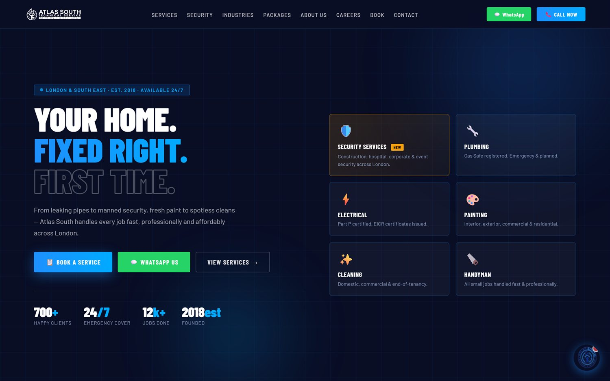
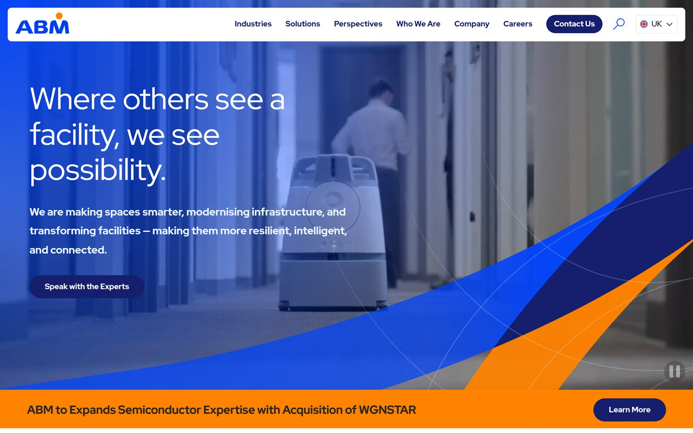
ABM's hero does less and shows more. One message, one button, and real footage of the service being delivered. Atlas South's hero asks the visitor to choose between three actions before showing a single piece of evidence that the work is good. The highest-value visual change is not a new colour palette — it is replacing emoji with photography and reducing the hero to one primary action.
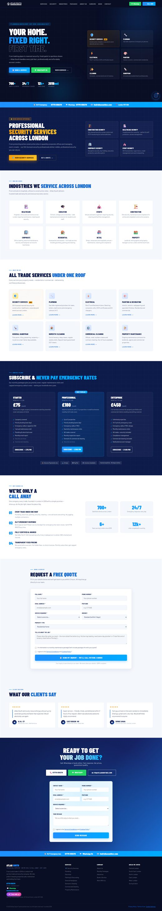
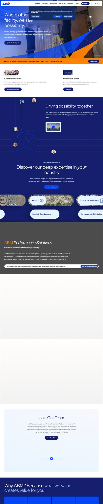
At the whole-page scale the two sites are almost the same length — the difference is rhythm. ABM alternates generous white space, imagery and colour blocks; Atlas South runs dense card grids with little breathing room between sections. Note also how much of ABM's page is given to a single idea at a time.
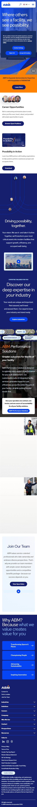
The mobile comparison is the starkest in this document. Atlas South's homepage is 85% longer on a phone than ABM's, because the desktop card grids stack into single columns without being condensed. Given that trade enquiries skew heavily mobile, this is a material conversion risk.
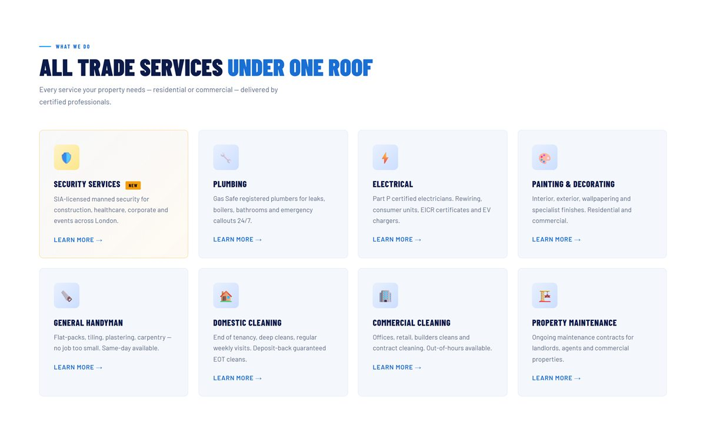
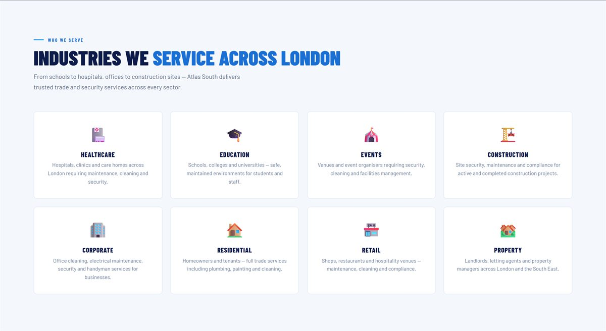
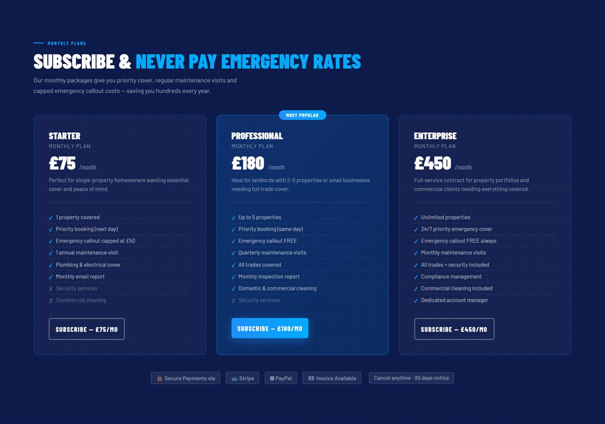
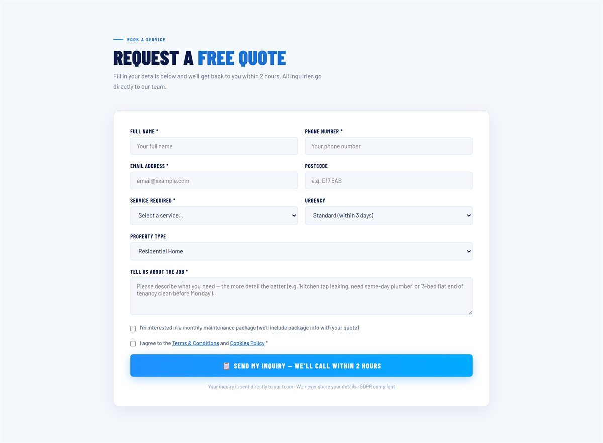
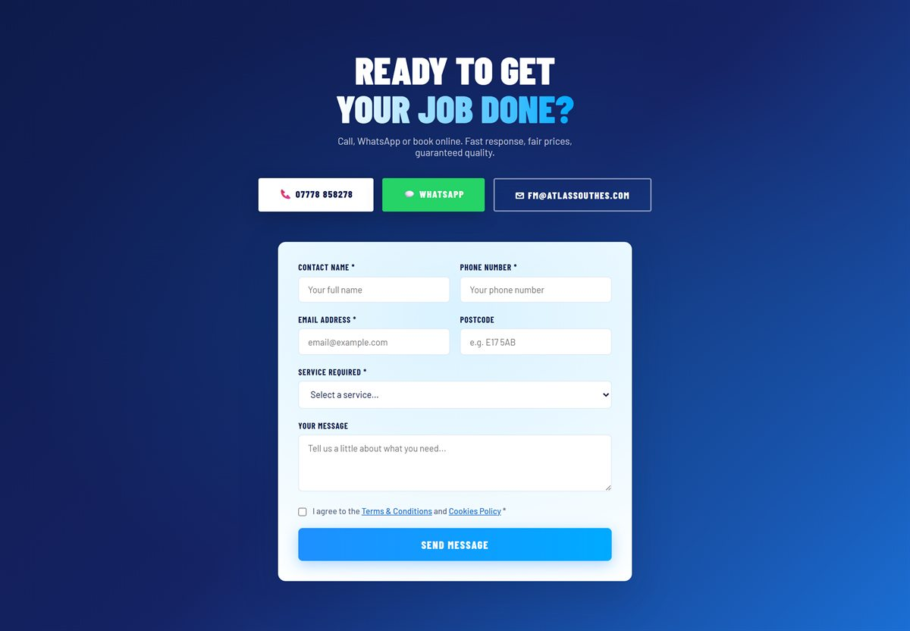
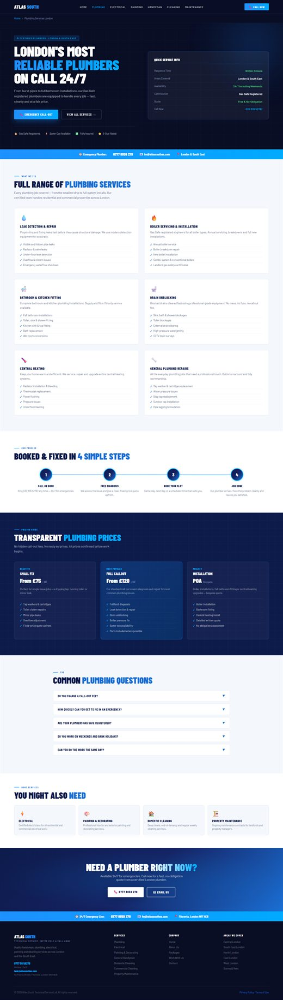
The service-page template is consistent and the copy on each is genuinely distinct (7.2% average overlap). What it lacks is evidence: no photographs of completed work, no certifications shown as artefacts, no case study, no FAQ block, and 12 dead links per page.
| Measure (homepage) | Atlas South | ABM | Read |
|---|---|---|---|
| Open Graph tags | 0 | 4 | Atlas behind |
| Twitter Card tags | 0 | 4 | Atlas behind |
| JSON-LD blocks | 0 | 2 | Atlas behind |
| Canonical tag | No | Yes | Atlas behind |
| Images on page | 3 | 103 | Atlas far behind |
| External scripts | 0 | 15 | Atlas lighter |
| HTML size (gzipped) | 56KB | ~150KB raw | Atlas lighter |
| DOM nodes | 650 | Much higher | Atlas lighter |
| HSTS | Yes | No | Atlas ahead |
| CSP | No | Partial | Atlas behind |
X-Frame-Options | No | SAMEORIGIN | Atlas behind |
| Cache-Control | None | Set | Atlas behind |
| Published pricing | Yes | No | Atlas ahead |
| On-page quote form | 2 forms | None | Atlas ahead |
| Analytics | None | Present | Atlas behind |
| Mobile page height | 15,168px | 8,189px | Atlas behind |
| Dimension | Atlas South | ABM |
|---|---|---|
| Scale | London & South East, founded 2018 | Global facilities management |
| Buyer | Homeowners, landlords, SMEs, plus emerging commercial | Enterprise procurement and facilities directors |
| Tone | Urgent, direct, concrete (“YOUR HOME. FIXED RIGHT.”) | Strategic, abstract (“Where others see a facility, we see possibility.”) |
| Sales motion | Self-serve — call, WhatsApp, submit, subscribe | Consultative — brochure download, “Speak with the Experts” |
| Proof | Stats row, 3 reviews, named certifications | Imagery, industry breadth, brand scale, sustainability narrative |
| Primary CTA | Three competing (Book / WhatsApp / View Services) | One (“Speak with the Experts”) |
A redesign that only chases ABM risks discarding advantages Atlas South already holds. These should be treated as protected assets with explicit regression tests at the end of every sprint.
| Asset | Evidence | Why it matters |
|---|---|---|
| Transparent published pricing | Three tiers, £75 / £180 / £450, with full feature comparison | ABM publishes nothing. Buyers self-qualify before contact, shortening the sales cycle and filtering out price-mismatched leads. |
| Self-serve conversion | Two on-page quote forms with service, urgency and property-type qualifiers | ABM has no equivalent. A visitor can convert in under a minute without speaking to anyone. |
| Instant human contact | Phone and WhatsApp CTAs repeated throughout; 24/7 line | Decisive for emergency trade work, where the first responder usually wins the job. |
| Genuinely unique service copy | 7.2% average overlap across eight service pages | No duplicate-content risk. This is the slow, expensive part of SEO and it is already done. |
| Concrete credential language | Gas Safe, Part P, EICR, SIA-licensed, DBS checked | Specific and verifiable, where ABM's messaging is abstract. |
| Exceptionally lean front end | 0 external scripts, 1 external stylesheet, 650 DOM nodes | Fast rendering by default. Protect this when adding imagery and analytics. |
| HSTS enabled | max-age=15552000; includeSubDomains |
Ahead of ABM, which sets no HSTS at all. |
| GDPR cookie consent | Granular necessary / analytics / marketing toggles | Already compliant-by-design, and ready for the analytics rollout in Sprint 1. |
| Real, attributed reviews | Named clients with locations (Walthamstow E17, Maida Vale W9) | Specific and believable. Needs volume and depth, not replacement. |
Every existing page, plus every page proposed. KEEP means the page stays and is improved in place; NEW means it does not yet exist.
| Issue found | Change | Sprint |
|---|---|---|
| Title 116 chars; no canonical; no OG; no schema | Shorten title to ≤60; add canonical, full OG/Twitter set, LocalBusiness + AggregateRating JSON-LD | 1 |
7 dead # links (Work With Us + 6 areas) | Point to the new careers and service-area pages | 1 / 6 |
| Emoji icons across hero, services, industries | Replace with a commissioned icon set; add aria-hidden | 2 |
| No photography | Photographic hero; real job imagery in service and industry cards | 2 / 3 |
| Three competing hero CTAs | One primary (Get a Quote); phone and WhatsApp become persistent secondary | 3 |
| Industries cards link nowhere | Link each to its new industry page | 5 |
| 26 unlabelled inputs; contrast failures | Label every input; fix WhatsApp green and muted body text | 1 / 8 |
| 15,168px mobile height | Condense sections; accordion the industries and packages blocks | 3 |
| Two near-duplicate forms | Single shared form component, one tracked conversion event | 7 |
security · plumbing · electrical · painting ·
handyman · domestic-cleaning · commercial-cleaning ·
property-maintenance — 830–958 words each, ~31–34KB, consistent template.
| Issue found | Change | Sprint |
|---|---|---|
Wrong phone number — five pages advertise 020 335 52797 | Standardise to one number and one format site-wide | 1 |
12 dead # links per page (~96 total) | Resolve to real destinations or remove | 1 |
No Service or FAQPage schema | Add both per page, plus BreadcrumbList | 1 |
Canonical missing on security.html | Add; audit the other seven | 1 |
| No on-page quote form | Embed the shared form, pre-filled with that service | 7 |
| No imagery, no case study, no FAQ | Add a job gallery, one case study and a 5-question FAQ per page | 4 |
| Heading skips (h2→h4, h3→h5) | Correct hierarchy in the shared template | 4 |
| No certification artefacts | Show the actual Gas Safe / Part P / SIA credentials as verifiable badges | 4 |
| Issue found | Change | Sprint |
|---|---|---|
| No canonical; description 184 chars; not in sitemap | Add canonical, trim description, add to sitemap | 1 |
| No team imagery or named leadership | Add founder story, team photographs, named leads | 4 |
No Organization schema | Add, with founding date and address | 1 |
| No accreditation detail | Add an insurance, DBS and licensing section | 4 |
| Issue found | Change | Sprint |
|---|---|---|
| Not in sitemap; no canonical; description truncated at 172 chars | Fix all three | 1 |
| Homepage “Work With Us” does not link here | Wire the link | 1 |
No JobPosting schema | Add per role — enables Google Jobs listings | 5 |
| Application form not tracked | Add conversion tracking and a thank-you state | 7 |
| Issue found | Change | Sprint |
|---|---|---|
| No canonical tags | Add | 1 |
| Third-party form processor may not be disclosed | Confirm formsubmit.co is named as a processor; verify GDPR basis | 1 |
| Analytics not yet covered | Update both documents before analytics goes live | 1 |
| Page | Count | Purpose | Sprint |
|---|---|---|---|
| Industry pages healthcare, education, events, construction, corporate, residential, retail, property | 8 | Give the existing homepage industry cards real destinations. Sector-specific proof, compliance language and case studies. The clearest ABM borrow. | 5 |
| Service-area pages Central, South East, North, East, West London, Surrey & Kent | 6 | Replace the six dead footer links. Highest-intent local search terms, each with local jobs and reviews. | 6 |
| Case studies | 6–10 | Close the single biggest credibility gap. Before/after imagery, scope, timeline, outcome. | 6 |
| Dedicated packages page | 1 | Give pricing its own indexable URL rather than a homepage anchor; room for comparison and FAQ. | 7 |
| Dedicated contact page | 1 | Own URL for “atlas south contact” searches; map, hours, coverage, LocalBusiness schema. | 7 |
| Thank-you page | 1 | Clean conversion URL for tracking; sets response-time expectations after submission. | 7 |
| Branded 404 | 1 | Replace the bare Apache default with navigation and a search or contact prompt. | 1 |
| Accreditations page | 1 | Gas Safe, Part P, SIA, insurance, DBS as verifiable artefacts for commercial procurement. | 4 |
| Insights / blog | ongoing | Informational and seasonal search capture; supports E-E-A-T signals. | 9 |
Site size after the programme: 13 pages today → approximately 38–42 pages, with every page carrying canonical, OG and schema by template default.
| Current | Target | Sprint |
|---|---|---|
| Header mixes real pages with homepage anchors; 15px tap height | Consistent page-based nav; dropdowns for Services and Industries; 44px minimum targets | 3 |
| No breadcrumbs | Breadcrumbs on all inner pages with BreadcrumbList schema | 4 |
| Footer contains 7 dead links | All links resolve; footer becomes the service-area and industry hub | 1 / 6 |
| No search | Optional site search once the page count passes ~30 | 9 |
| Current | Target | Sprint |
|---|---|---|
| Two near-duplicate forms, hand-maintained | One shared component, context-aware defaults per page | 7 |
| 26 inputs without labels | Every input labelled; full keyboard and screen-reader pass | 1 |
Posts to formsubmit.co; captcha disabled | Confirm GDPR processing basis; keep the honeypot; evaluate a first-party endpoint | 1 / 7 |
Redirects to /?sent=1 | Dedicated /thank-you page as a clean conversion URL | 7 |
| No validation feedback or submission state | Inline validation, loading state, explicit success and failure messaging | 7 |
| No tracking | Conversion event per submission, segmented by service and urgency | 1 / 7 |
| Current | Target | Sprint |
|---|---|---|
| Three tiers on a homepage anchor; Stripe/PayPal indicated | Own indexable page; verify the live checkout path end to end | 7 |
No Offer schema | Add per tier — enables price display in search results | 7 |
| No comparison view or FAQ | Comparison table plus billing, cancellation and coverage FAQ | 7 |
| Current | Target | Sprint |
|---|---|---|
| Conflicting numbers across pages | Single number, single format, defined once in the template | 1 |
| WhatsApp button fails contrast at 1.98:1 | Accessible colour pairing that stays recognisably WhatsApp | 8 |
| Click-throughs untracked | Track tel: and wa.me clicks as micro-conversions | 1 |
| Shared links have no preview card | OG image and title so WhatsApp shares render properly | 1 |
| Current | Target | Sprint |
|---|---|---|
| Granular banner exists but governs nothing — no analytics installed | GA4 (or equivalent) wired to the existing consent toggles | 1 |
| No baseline metrics | Two to three weeks of baseline traffic and conversion data before visual work starts | 1 |
| No Search Console | Verify property; submit sitemap; monitor indexation and queries | 1 |
| Current | Target | Sprint |
|---|---|---|
| Three static reviews, no schema | Expanded set with Review / AggregateRating markup | 1 / 6 |
| No case studies, no client logos | Case study library, filterable by service and industry | 6 |
| No third-party review integration | Connect Google Business Profile / Trustpilot | 9 |
| Current | Target | Sprint |
|---|---|---|
| 226KB inline CSS/JS duplicated across 13 files | Shared external stylesheet and script, cached and versioned | 2 |
| No design tokens | Documented colour, type, spacing and component tokens | 2 |
| No templating — 13 hand-edited files | Header, footer, nav, form and card as reusable partials or components | 2 |
| No build or staging | Build step, staging environment, deployment pipeline | 2 |
| No caching or security headers | Server config for Cache-Control, CSP, XFO, XCTO, Referrer-Policy | 1 |
Sequenced so that measurement precedes change, architecture precedes visual work, and templates precede page production. Sprint numbering continues from the Sprint 0 foundations already agreed.
| Sprint | Theme | Scope | Exit criteria |
|---|---|---|---|
| 1 | Measurement & quick wins | Analytics + Search Console; fix the phone-number conflict; add OG, canonicals and core schema; repair ~90 dead links; security and caching headers; label form inputs; branded 404; sitemap completion | Baseline data flowing; SEO sub-score ≥80 |
| 2 | Design system & architecture | Extract shared CSS/JS; design tokens; component library; templating; build and staging pipeline; commission photography and a custom icon set | One template change propagates to all pages |
| 3 | Homepage rebuild | Photographic hero; single primary CTA; condensed mobile layout; real icons; restructured sections | Mobile height under 9,000px; hero converts at or above baseline |
| 4 | Service pages | All eight rebuilt on the new template: imagery, FAQ blocks, certification artefacts, embedded forms, corrected heading hierarchy; accreditations page | Eight pages live with schema and forms |
| 5 | Industry pages | Eight new sector pages with tailored proof and compliance language; JobPosting schema on careers |
Homepage industry cards all resolve |
| 6 | Local & proof | Six service-area pages; case study library; expanded reviews with schema | Zero dead links site-wide; local pages indexed |
| 7 | Conversion | Unified form component; thank-you page; packages and contact pages; checkout verification; full funnel tracking | Every conversion path tracked end to end |
| 8 | Accessibility & performance | WCAG 2.1 AA pass — contrast, tap targets, landmarks, keyboard, screen reader; Core Web Vitals; image optimisation; TTFB and CDN | AA conformance; Vitals in the green |
| 9 | Content operations & launch | Insights/blog; third-party review integration; site search if warranted; redirect map; launch checklist | Overall score ≥85 (Grade B) |
Why analytics first: without a baseline there is no way to prove the redesign worked, and no way to catch a regression. Why architecture before visuals: while the stylesheet is duplicated across 13 files, every design change costs 13× and drifts. Why templates before new pages: producing 23 new pages on the current architecture would multiply the maintenance problem rather than solve it.
| Milestone | Overall | SEO | Driver |
|---|---|---|---|
| Today | 48 · F | 53 · E | Baseline |
| After Sprint 1 | ~68 · D | ~82 · B | Schema, OG, canonicals, headers, dead links, NAP |
| After Sprint 4 | ~78 · C | ~86 · B | Photography, templates, service-page depth |
| After Sprint 8 | ~88 · B | ~92 · A | Accessibility, performance, local and industry pages |
Projections are estimates against this document's rubric, not guarantees, and assume the scope above is delivered in full.
| Page | Status | Size | TTFB | Title | Desc | Canon | OG | Schema | H1 | Skips | Words |
|---|---|---|---|---|---|---|---|---|---|---|---|
| index.html | 200 | 128KB | 1.04s | 116 | 168 | — | 0 | 0 | 1 | 2 | 1506 |
| security.html | 200 | 33KB | 0.98s | 91 | 164 | — | 0 | 0 | 1 | 3 | 949 |
| plumbing.html | 200 | 32KB | 1.00s | 68 | 155 | Y | 0 | 0 | 1 | 3 | 958 |
| electrical.html | 200 | 31KB | 1.28s | 64 | 152 | Y | 0 | 0 | 1 | 3 | 842 |
| painting.html | 200 | 31KB | 1.52s | 71 | 166 | Y | 0 | 0 | 1 | 3 | 833 |
| handyman.html | 200 | 31KB | 1.03s | 58 | 153 | Y | 0 | 0 | 1 | 3 | 894 |
| domestic-cleaning.html | 200 | 31KB | 1.13s | 71 | 148 | Y | 0 | 0 | 1 | 3 | 873 |
| commercial-cleaning.html | 200 | 31KB | 1.12s | 70 | 150 | Y | 0 | 0 | 1 | 3 | 830 |
| property-maintenance.html | 200 | 31KB | 1.08s | 75 | 152 | Y | 0 | 0 | 1 | 3 | 840 |
| about.html | 200 | 59KB | 1.04s | 60 | 184 | — | 0 | 0 | 1 | 1 | 1047 |
| careers.html | 200 | 76KB | 1.08s | 89 | 172 | — | 0 | 0 | 1 | 1 | 1744 |
| terms-of-use.html | 200 | 50KB | 0.99s | 45 | 116 | — | 0 | 0 | 1 | 1 | 1640 |
| privacy-policy.html | 200 | 53KB | 1.02s | 47 | 118 | — | 0 | 0 | 1 | 1 | 1668 |
| Page | tel: targets | Numbers displayed in copy |
|---|---|---|
| index | 07778858278 | 07778 858278 |
| security | 07778858278 | 07778 858278 |
| plumbing | 07778858278, 02033552797 | 020 335 52797, 0777 8858 278, 0777 88 58278 |
| electrical | 07778858278, 02033552797 | 0777 8858278, 0777885 8278, 020 335 52797 |
| painting | 07778858278, 02033552797 | 020 335 52797, 0777 8858278 |
| handyman | 02033552797, 07778858278 | 020 335 52797, 0777 8858278 |
| domestic-cleaning | 07778858278 | 0777 8858 278, 07778858278 |
| commercial-cleaning | 07778858278 | 0777 8858 278 |
| property-maintenance | 07778858278, 02033552797 | 020 335 52797, 0777 8858 278 |
| about / careers / legal | 07778858278 | 07778 858278 |
The 0303 123 1113 appearing on the privacy policy is the ICO helpline and is correct.
| Service page pair | Overlap |
|---|---|
| painting vs handyman | 11.2% |
| domestic-cleaning vs commercial-cleaning | 11.1% |
| painting vs property-maintenance | 10.9% |
| handyman vs property-maintenance | 10.3% |
| commercial-cleaning vs property-maintenance | 10.3% |
| Average across all 28 pairs | 7.2% |
Well below the ~30% threshold at which duplicate-content concerns typically arise. This is a strength.
| Header | Atlas South | ABM |
|---|---|---|
strict-transport-security | max-age=15552000 | absent |
content-security-policy | absent | frame-ancestors 'self' |
x-frame-options | absent | SAMEORIGIN |
x-content-type-options | absent | absent |
referrer-policy | absent | absent |
permissions-policy | absent | absent |
cache-control | absent | max-age=0, no-cache, no-store |
content-encoding | gzip | gzip |
server | Apache (version hidden) | hidden |
| Endpoints | formsubmit.co/start@atlassouthes.com and formsubmit.co/ajax/start@atlassouthes.com |
| Honeypot spam field | Present |
| Captcha | Disabled (_captcha = false) |
| Post-submit redirect | https://atlassouthes.com/?sent=1#booking — not a distinct page |
| Email subject | “New Booking Inquiry from Website” |
| Inputs without labels | 26 |
robots.txt | Present · allows all · correctly references the sitemap |
sitemap.xml | Present · 11 URLs · missing about.html and careers.html |
| 404 handling | Correct 404 status, but a bare 236-byte Apache default page |
| Broken internal links | 0 — every real page returns 200 |
| Dead placeholder links | ~90 (href="#") |
Atlas South Technical Services — Website Audit & Comparative Analysis · v1.0 · 29 July 2026 · Prepared as part of Sprint 0 foundations. Scores are calculated against the rubric published in §3 of this document and are not SquirrelScan scores. All measurements are reproducible from the data in this appendix.